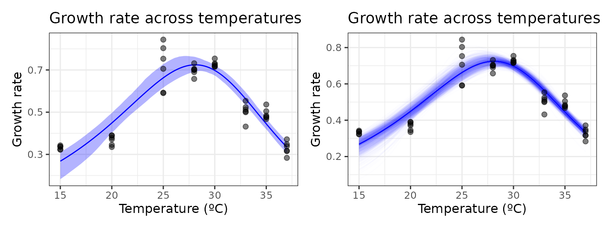
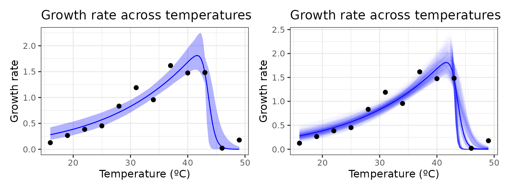
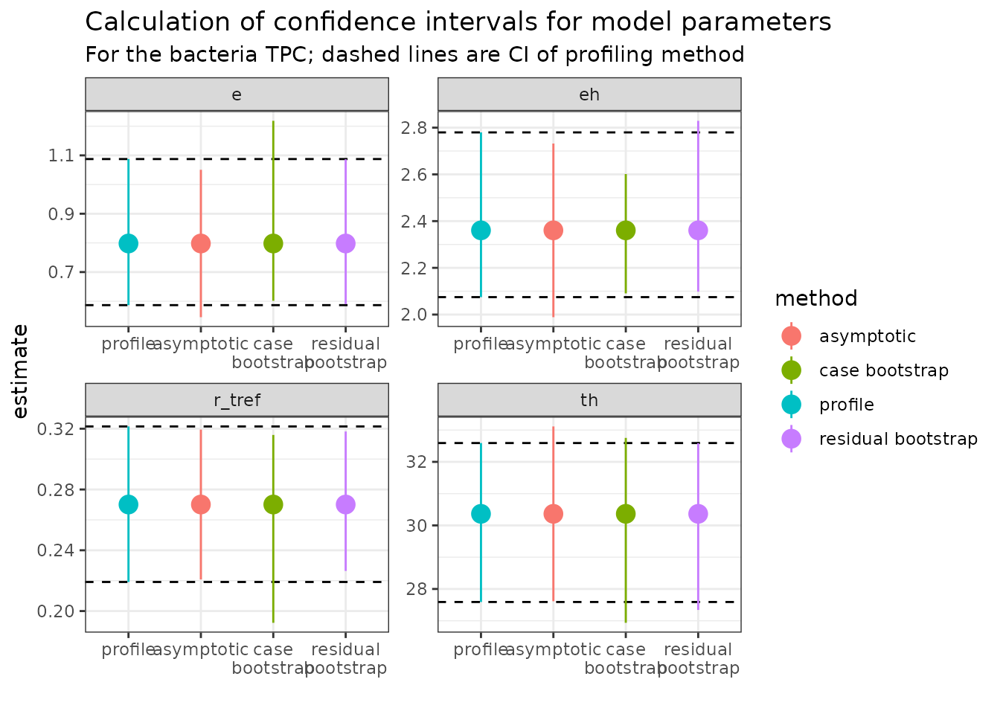
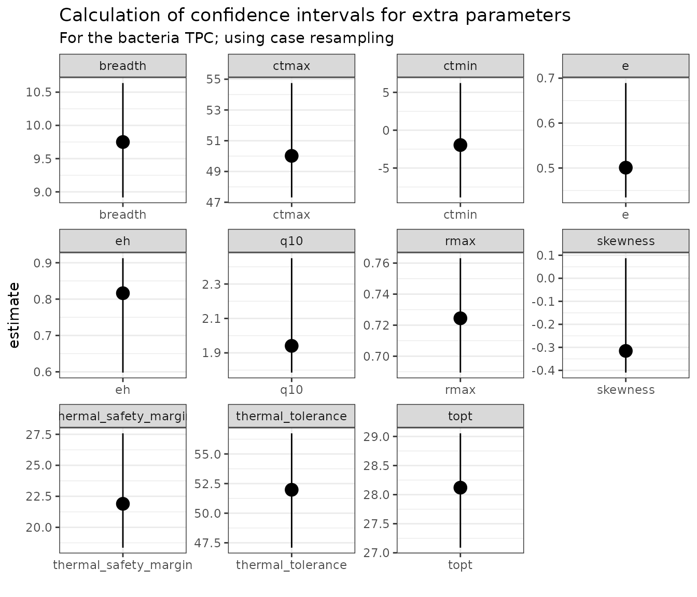

vignettes/bootstrapping_models.Rmd
bootstrapping_models.RmdBootstrapping involves simulating “new” datasets produced from the existing data by sampling with replacement. The same model is then fitted separately on each individual bootstrapped dataset. Doing this over and over allows us to visualise uncertainty of predictions and produce confidence intervals of estimated parameters.
First, we will demonstrate this case resampling approach using data
from a recent paper by Padfield et al. (2020), that measures
the thermal performance of the bacteria, Pseudomonas
fluorescens, in the presence and absence of its phage, \(\phi 2\). In this study, each single growth
rate estimate is a technical replicate, coming from an isogenic strain
of bacteria either inoculated with, or without, the phage. As such, all
the data points within each phage treatment can be used to estimate the
same curve and there is no rep column as in the
chlorella_tpc dataset. We can visualise one of the curves
(bacteria in the absence of phage), using ggplot2.
# load in data
data("bacteria_tpc")
# keep just a single curve
d <- filter(bacteria_tpc, phage == 'nophage')
# show the data
ggplot(d, aes(temp, rate)) +
geom_point(size = 2, alpha = 0.5) +
theme_bw(base_size = 12) +
labs(x = 'Temperature (ºC)',
y = 'Growth rate',
title = 'Growth rate across temperatures')As in the study, we can fit the Sharpe-Schoolfield model to the data
and plot the predictions using the approaches in
vignette(rTPC) and
vignette(fit_many_models).
# fit Sharpe-Schoolfield model
d_fit <- nest(d, data = c(temp, rate)) %>%
mutate(sharpeschoolhigh = map(data, ~nls_multstart(rate~sharpeschoolhigh_1981(temp = temp, r_tref,e,eh,th, tref = 15),
data = .x,
iter = c(3,3,3,3),
start_lower = get_start_vals(.x$temp, .x$rate, model_name = 'sharpeschoolhigh_1981') - 10,
start_upper = get_start_vals(.x$temp, .x$rate, model_name = 'sharpeschoolhigh_1981') + 10,
lower = get_lower_lims(.x$temp, .x$rate, model_name = 'sharpeschoolhigh_1981'),
upper = get_upper_lims(.x$temp, .x$rate, model_name = 'sharpeschoolhigh_1981'),
supp_errors = 'Y',
convergence_count = FALSE)),
# create new temperature data
new_data = map(data, ~tibble(temp = seq(min(.x$temp), max(.x$temp), length.out = 100))),
# predict over that data,
preds = map2(sharpeschoolhigh, new_data, ~augment(.x, newdata = .y)))
# unnest predictions
d_preds <- select(d_fit, preds) %>%
unnest(preds)
# plot data and predictions
ggplot() +
geom_line(aes(temp, .fitted), d_preds, col = 'blue') +
geom_point(aes(temp, rate), d, size = 2, alpha = 0.5) +
theme_bw(base_size = 12) +
labs(x = 'Temperature (ºC)',
y = 'Growth rate',
title = 'Growth rate across temperatures')Here we have the best fit to the data. If we want confidence bands around this prediction, we can get those by resampling the data a number of times. The R package car contains the function Boot() that provides a wrapper for the widely used function boot::boot() that is tailored to bootstrapping regression models.
nls_multstart() is designed to fit models across a wide possible parameter space, but as it samples multiple start parameters for each model, using it with bootstrapping becomes computationally expensive. Instead, we refit the model using minpack.lm::nlsLM(), using the coefficients of nls_multstart() as the start values. The Boot() function then refits the model 999 times and stores the model coefficients.
# refit model using nlsLM
fit_nlsLM <- minpack.lm::nlsLM(rate~sharpeschoolhigh_1981(temp = temp, r_tref,e,eh,th, tref = 15),
data = d,
start = coef(d_fit$sharpeschoolhigh[[1]]),
lower = get_lower_lims(d$temp, d$rate, model_name = 'sharpeschoolhigh_1981'),
upper = get_upper_lims(d$temp, d$rate, model_name = 'sharpeschoolhigh_1981'),
weights = rep(1, times = nrow(d)))
# bootstrap using case resampling
boot1 <- Boot(fit_nlsLM, method = 'case')
# look at the data
head(boot1$t)
#> r_tref e eh th
#> [1,] 0.2917018 0.6398576 2.498373 32.24220
#> [2,] 0.2438665 0.8595651 2.361576 30.15479
#> [3,] 0.2908197 0.6591876 2.619411 31.87962
#> [4,] 0.2444134 0.9438445 2.274287 29.06155
#> [5,] 0.2906214 0.7563046 2.248642 30.35514
#> [6,] 0.2264022 1.0167112 2.448981 28.94010The parameters of each bootstrapped refit are returned. All methods that are available for boot() and Boot() are supported for these objects. This includes the hist.boot() to look at the distribution of each parameter.
We can easily create predictions for each of these models and through this confidence intervals around the original fitted predictions. We can then plot (1) the bootstrapped fits and (2) the confidence regions around the model predictions.
# create predictions of each bootstrapped model
boot1_preds <- boot1$t %>%
as.data.frame() %>%
drop_na() %>%
mutate(iter = 1:n()) %>%
group_by_all() %>%
do(data.frame(temp = seq(min(d$temp), max(d$temp), length.out = 100))) %>%
ungroup() %>%
mutate(pred = sharpeschoolhigh_1981(temp, r_tref, e, eh, th, tref = 15))
# calculate bootstrapped confidence intervals
boot1_conf_preds <- group_by(boot1_preds, temp) %>%
summarise(conf_lower = quantile(pred, 0.025),
conf_upper = quantile(pred, 0.975)) %>%
ungroup()
# plot bootstrapped CIs
p1 <- ggplot() +
geom_line(aes(temp, .fitted), d_preds, col = 'blue') +
geom_ribbon(aes(temp, ymin = conf_lower, ymax = conf_upper), boot1_conf_preds, fill = 'blue', alpha = 0.3) +
geom_point(aes(temp, rate), d, size = 2, alpha = 0.5) +
theme_bw(base_size = 12) +
labs(x = 'Temperature (ºC)',
y = 'Growth rate',
title = 'Growth rate across temperatures')
# plot bootstrapped predictions
p2 <- ggplot() +
geom_line(aes(temp, .fitted), d_preds, col = 'blue') +
geom_line(aes(temp, pred, group = iter), boot1_preds, col = 'blue', alpha = 0.007) +
geom_point(aes(temp, rate), d, size = 2, alpha = 0.5) +
theme_bw(base_size = 12) +
labs(x = 'Temperature (ºC)',
y = 'Growth rate',
title = 'Growth rate across temperatures')
p1 + p2
This method works well here, because there are many points beyond the optimum temperature and multiple independent points at each temperature.
This method becomes more problematic when there is a small sample
size and the coverage of temperature values beyond the optimum
temperature is small. This means that many of the bootstrapped models
will not have any points beyond the optimum, which is problematic for
mathematical models that expect a unimodal shape. The effect of this can
be seen by case resampling a curve from the chlorella_tpc
dataset used throughout these vignettes. Here we again fit the model
using nls_multstart(), refit the model using
nlsLM(), then bootstrap the model using
Boot().
# load in chlorella data
data('chlorella_tpc')
d2 <- filter(chlorella_tpc, curve_id == 1)
# fit Sharpe-Schoolfield model to raw data
d_fit <- nest(d2, data = c(temp, rate)) %>%
mutate(sharpeschoolhigh = map(data, ~nls_multstart(rate~sharpeschoolhigh_1981(temp = temp, r_tref,e,eh,th, tref = 15),
data = .x,
iter = c(3,3,3,3),
start_lower = get_start_vals(.x$temp, .x$rate, model_name = 'sharpeschoolhigh_1981') - 10,
start_upper = get_start_vals(.x$temp, .x$rate, model_name = 'sharpeschoolhigh_1981') + 10,
lower = get_lower_lims(.x$temp, .x$rate, model_name = 'sharpeschoolhigh_1981'),
upper = get_upper_lims(.x$temp, .x$rate, model_name = 'sharpeschoolhigh_1981'),
supp_errors = 'Y',
convergence_count = FALSE)),
# create new temperature data
new_data = map(data, ~tibble(temp = seq(min(.x$temp), max(.x$temp), length.out = 100))),
# predict over that data,
preds = map2(sharpeschoolhigh, new_data, ~augment(.x, newdata = .y)))
# refit model using nlsLM
fit_nlsLM2 <- nlsLM(rate~sharpeschoolhigh_1981(temp = temp, r_tref,e,eh,th, tref = 15),
data = d2,
start = coef(d_fit$sharpeschoolhigh[[1]]),
lower = get_lower_lims(d2$temp, d2$rate, model_name = 'sharpeschoolhigh_1981'),
upper = get_upper_lims(d2$temp, d2$rate, model_name = 'sharpeschoolhigh_1981'),
control = nls.lm.control(maxiter=500),
weights = rep(1, times = nrow(d2)))
# bootstrap using case resampling
boot2 <- Boot(fit_nlsLM2, method = 'case')
#>
#> Number of bootstraps was 985 out of 999 attemptedNumber of bootstraps was 994 out of 999 attempted We can then create predictions for each bootstrapped model and
calculate 95% confidence intervals around the predictions. Models that
don’t fit and return NA for the parameter estimates are
dropped.
# unnest predictions of original model fit
d_preds <- select(d_fit, preds) %>%
unnest(preds)
# predict over new data
boot2_preds <- boot2$t %>%
as.data.frame() %>%
drop_na() %>%
mutate(iter = 1:n()) %>%
group_by_all() %>%
do(data.frame(temp = seq(min(d2$temp), max(d2$temp), length.out = 100))) %>%
ungroup() %>%
mutate(pred = sharpeschoolhigh_1981(temp, r_tref, e, eh, th, tref = 15))
# calculate bootstrapped confidence intervals
boot2_conf_preds <- group_by(boot2_preds, temp) %>%
summarise(conf_lower = quantile(pred, 0.025),
conf_upper = quantile(pred, 0.975)) %>%
ungroup()
# plot bootstrapped CIs
p1 <- ggplot() +
geom_line(aes(temp, .fitted), d_preds, col = 'blue') +
geom_ribbon(aes(temp, ymin = conf_lower, ymax = conf_upper), boot2_conf_preds, fill = 'blue', alpha = 0.3) +
geom_point(aes(temp, rate), d2, size = 2) +
theme_bw(base_size = 12) +
labs(x = 'Temperature (ºC)',
y = 'Growth rate',
title = 'Growth rate across temperatures')
# plot bootstrapped predictions
p2 <- ggplot() +
geom_line(aes(temp, .fitted), d_preds, col = 'blue') +
geom_line(aes(temp, pred, group = iter), boot2_preds, col = 'blue', alpha = 0.007) +
geom_point(aes(temp, rate), d2, size = 2) +
theme_bw(base_size = 12) +
labs(x = 'Temperature (ºC)',
y = 'Growth rate',
title = 'Growth rate across temperatures')
p1 + p2As can be seen, bootstrapping-with-replacement with only a single point at each temperature can lead to a large variety of fits. In the second panel, we can see the variation of the curve fits, clustering around 4 possible paths for the decrease in rate beyond the optimum temperature. This occurs because in many instances there are no points sampled at the very high temperatures, leading to this clustering in curve fits.
Case resampling is the most common way of thinking about bootstrapping. However, bootstrapping ordinary least squares regression models is often done using bootstrapping residuals. This method - where the values of the predictors in a study remain fixed during resampling - is especially useful in a designed experiment where the values of the predictors are set by the experimenter. This is commonly the case when measuring thermal performance curves.
Re-sampling residuals, at its heart, follows a simple set of steps:
This method makes the assumption that the original model fit is a good representation of the data, and that the error terms in the model are normally distributed and independent. If the model is incorrectly specified – for example, if there is unmodelled non-linearity, non-constant error variance, or outliers – these characteristics will not carry over into the re-sampled data sets.
car::Boot() has an argument that allows us to easily implement residual resampling instead of case resampling.
# bootstrap using residual resampling
boot3 <- Boot(fit_nlsLM2, method = 'residual')
# predict over new data
boot3_preds <- boot3$t %>%
as.data.frame() %>%
drop_na() %>%
mutate(iter = 1:n()) %>%
group_by_all() %>%
do(data.frame(temp = seq(min(d2$temp), max(d2$temp), length.out = 100))) %>%
ungroup() %>%
mutate(pred = sharpeschoolhigh_1981(temp, r_tref, e, eh, th, tref = 15))
# calculate bootstrapped confidence intervals
boot3_conf_preds <- group_by(boot3_preds, temp) %>%
summarise(conf_lower = quantile(pred, 0.025),
conf_upper = quantile(pred, 0.975)) %>%
ungroup()
# plot bootstrapped CIs
p1 <- ggplot() +
geom_line(aes(temp, .fitted), d_preds, col = 'blue') +
geom_ribbon(aes(temp, ymin = conf_lower, ymax = conf_upper), boot3_conf_preds, fill = 'blue', alpha = 0.3) +
geom_point(aes(temp, rate), d2, size = 2) +
theme_bw(base_size = 12) +
labs(x = 'Temperature (ºC)',
y = 'Growth rate',
title = 'Growth rate across temperatures')
# plot bootstrapped predictions
p2 <- ggplot() +
geom_line(aes(temp, .fitted), d_preds, col = 'blue') +
geom_line(aes(temp, pred, group = iter), boot3_preds, col = 'blue', alpha = 0.007) +
geom_point(aes(temp, rate), d2, size = 2) +
theme_bw(base_size = 12) +
labs(x = 'Temperature (ºC)',
y = 'Growth rate',
title = 'Growth rate across temperatures')
p1 + p2
Bootstrapping can be used to estimate confidence intervals of the parameters explicitly modelled in the regression. We can compare these approaches to profiled confidence intervals (using confint-MASS) and asymptotic confidence intervals (using nlstools::confint2()). For the bootstrapped parameter distributions, confint.boot() supports the calculation of BCa, basic, normal, and percentile confidence intervals. We use BCa here, and we will calculate all CIs on the two models done previously in this vignette. First with the bacteria TPC.
# First for the bacteria
# get parameters of fitted model
param_bact <- broom::tidy(fit_nlsLM) %>%
select(param = term, estimate)
# calculate confidence intervals of models
ci_bact1 <- nlstools::confint2(fit_nlsLM, method = 'asymptotic') %>%
as.data.frame() %>%
rename(conf_lower = 1, conf_upper = 2) %>%
rownames_to_column(., var = 'param') %>%
mutate(method = 'asymptotic')
ci_bact2 <- confint(fit_nlsLM) %>%
as.data.frame() %>%
rename(conf_lower = 1, conf_upper = 2) %>%
rownames_to_column(., var = 'param') %>%
mutate(method = 'profile')
#> Waiting for profiling to be done...
# CIs from case resampling
ci_bact3 <- confint(boot1, method = 'bca') %>%
as.data.frame() %>%
rename(conf_lower = 1, conf_upper = 2) %>%
rownames_to_column(., var = 'param') %>%
mutate(method = 'case bootstrap')
# CIs from residual resampling
ci_bact4 <- Boot(fit_nlsLM, method = 'residual') %>%
confint(., method = 'bca') %>%
as.data.frame() %>%
rename(conf_lower = 1, conf_upper = 2) %>%
rownames_to_column(., var = 'param') %>%
mutate(method = 'residual bootstrap')
ci_bact <- bind_rows(ci_bact1, ci_bact2, ci_bact3, ci_bact4) %>%
left_join(., param_bact)
#> Joining with `by = join_by(param)`
# plot
ggplot(ci_bact, aes(forcats::fct_relevel(method, c('profile', 'asymptotic')), estimate, col = method)) +
geom_hline(aes(yintercept = conf_lower), linetype = 2, filter(ci_bact, method == 'profile')) +
geom_hline(aes(yintercept = conf_upper), linetype = 2, filter(ci_bact, method == 'profile')) +
geom_point(size = 4) +
geom_linerange(aes(ymin = conf_lower, ymax = conf_upper)) +
theme_bw() +
facet_wrap(~param, scales = 'free') +
scale_x_discrete('', labels = function(x) stringr::str_wrap(x, width = 10)) +
labs(title = 'Calculation of confidence intervals for model parameters',
subtitle = 'For the bacteria TPC; dashed lines are CI of profiling method')
Each panel is a different explicitly modelled parameter. The dashed
lines represent the 95% intervals for the profiling method. In general,
the different bootstrap methods are similar to the profiled intervals,
but not all parameters are the same. For example, r_tref
and e give wider (and asymmetric) confidence intervals
using the case resampling method. The residual method gives estimates
that are more similar to those calculated from profiling.
Now for the TPC from the Chlorella dataset.
# Second for Chlorella data
# get parameters of fitted model
param_chlor <- broom::tidy(fit_nlsLM2) %>%
select(param = term, estimate)
# calculate confidence intervals of models
ci_chlor1 <- nlstools::confint2(fit_nlsLM2, method = 'asymptotic') %>%
as.data.frame() %>%
rename(conf_lower = 1, conf_upper = 2) %>%
rownames_to_column(., var = 'param') %>%
mutate(method = 'asymptotic')
ci_chlor2 <- nlstools::confint2(fit_nlsLM2, method = 'profile')
#> Waiting for profiling to be done...
#> Error in prof$getProfile(): number of iterations exceeded maximum of 50
# profiling method fails
ci_chlor2 <- mutate(ci_chlor1, method = 'profile',
conf_lower = NA,
conf_upper = NA)
# CIs from case resampling
ci_chlor3 <- confint(boot2, method = 'bca') %>%
as.data.frame() %>%
rename(conf_lower = 1, conf_upper = 2) %>%
rownames_to_column(., var = 'param') %>%
mutate(method = 'case bootstrap')
# CIs from residual resampling
ci_chlor4 <- confint(boot3, method = 'bca') %>%
as.data.frame() %>%
rename(conf_lower = 1, conf_upper = 2) %>%
rownames_to_column(., var = 'param') %>%
mutate(method = 'residual bootstrap')
ci_chlor <- bind_rows(ci_chlor1, ci_chlor2, ci_chlor3, ci_chlor4) %>%
full_join(., param_chlor)
#> Joining with `by = join_by(param)`
ggplot(ci_chlor, aes(forcats::fct_relevel(method, c('profile', 'asymptotic')), estimate, col = method)) +
geom_point(size = 4) +
geom_linerange(aes(ymin = conf_lower, ymax = conf_upper)) +
theme_bw() +
facet_wrap(~param, scales = 'free') +
scale_x_discrete('', labels = function(x) stringr::str_wrap(x, width = 10)) +
labs(title = 'Calculation of confidence intervals for model parameters',
subtitle = 'For the chlorella TPC; profile method failes')
For this curve, the profiling method failed and the asymptotic method
has very wide confidence intervals for eh. Consequently, it
is hard to know how the bootstrapping methods do as these cannot be
benchmarked against the profiling method. Even so, we can see that the
intervals for eh and th for the case
resampling method are very wide (as can be seen from the plot of the
model predictions earlier). Meanwhile, the residual resampling method
again gives more symmetric estimates, but we don’t know if they are
conservative (give narrower CIs) which would increase the rate of false
positives if used for inference.
We can also bootstrap confidence intervals for the extra parameters calculated in calc_params(). We will do this for the bacteria TPC and the case resample.
extra_params <- calc_params(fit_nlsLM) %>%
pivot_longer(everything(), names_to = 'param', values_to = 'estimate')
ci_extra_params <- Boot(fit_nlsLM, f = function(x){unlist(calc_params(x))}, labels = names(calc_params(fit_nlsLM)), R = 200, method = 'case') %>%
confint(., method = 'bca') %>%
as.data.frame() %>%
rename(conf_lower = 1, conf_upper = 2) %>%
rownames_to_column(., var = 'param') %>%
mutate(method = 'case bootstrap')
ci_extra_params <- left_join(ci_extra_params, extra_params)
#> Joining with `by = join_by(param)`
ggplot(ci_extra_params, aes(param, estimate)) +
geom_point(size = 4) +
geom_linerange(aes(ymin = conf_lower, ymax = conf_upper)) +
theme_bw() +
facet_wrap(~param, scales = 'free') +
scale_x_discrete('') +
labs(title = 'Calculation of confidence intervals for extra parameters',
subtitle = 'For the bacteria TPC; using case resampling')
You can see that the confidence intervals around certain parameters,
such as e, eh, q10, and
skewness are very asymmetrical. This is because they are
modelled from a subsample of the original dataset (for example,
e is calculated from fitting a modified Boltzmann equation
to all the points at or below the optimum temperature as calculated from
the model predictions). If interested in these parameters, we recommend
using mathematical models that contain them explicitly in the
formulation.
NB The Padfield et al. analysis actually uses a Bayesian approach to fit thermal performance curves, quantify uncertainty, and estimate derived parameters. This approach is powerful and flexible, and becoming easier to use with the incredible development of the R package brms. Examples of using brms to model thermal performance curves can be found on the GitHub repository of the paper